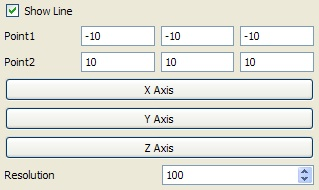
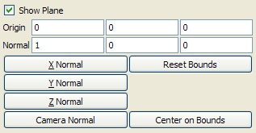
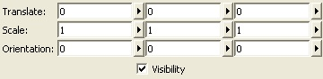
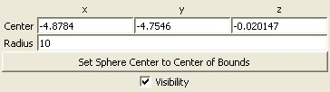
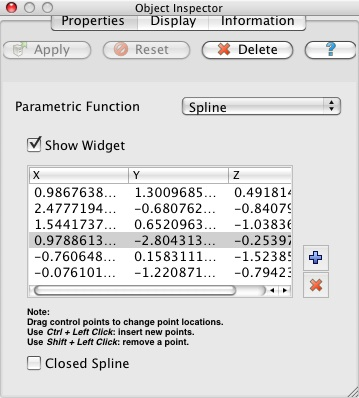

Manipulating data in the 3D view
3D Widgets
In addition to being controlled manually through entry boxes, sliders, etc., parameters of some of the filters and sources in ParaView can be changed interactively by manipulating 3D widgets in a 3D view. Often the 3D widgets are used to set the parameters approximately, and then the manual controls are used for fine-tuning these values. In the manual controls for each 3D widget, there is a check box for toggling whether the 3D widget is drawn in the scene; the label for the check box depends on the type of 3D widget being used. The following 3D widgets are supported in ParaView.
Line Widget
The line widget is used to set the orientation and the position of a line. It is used in both the Stream Tracer and Elevation filters. The position of the line can be changed by clicking on any point on the line except the endpoints and dragging. To position the widget accurately, the user may need to change the camera position as well. Holding the Shift key while interacting will restrict the motion of the line widget to one of the X, Y, or Z planes. (The plane chosen is the one most closely aligned with the direction of the initial mouse movement.) To move one of the endpoints, simply use one of the point widgets on each end of the line. These are marked by spheres which become red when clicked. You can also reposition the endpoints by pressing the “P” key; the endpoint nearest to the mouse cursor will be placed at the position on the data set surface beneath the mouse position. Left-clicking while the cursor is over the line and dragging will reposition the entire line. Doing the same with the right mouse button causes the line to resize. Upward mouse motion increases the length of the line; downward motion decreases it.

Figure 10. Line widget user interface
The Show Line check box toggles the visibility of the line in the 3D view.
The controls shown above can be used to precisely set the endpoint coordinates and resolution of the line. The X Axis, Y Axis, and Z Axis buttons cause the line to be along the selected axis and pass through the center of the bounds of the data set.
Depending on the source or filter using this widget, the Resolution spin box may not be displayed. The value of the Resolution spin box determines the number of segments composing the line.
Plane Widget
The plane widget is used in clipping and cutting. The plane can be moved parallel to its normal by left-clicking on any point on the plane except the line center and dragging. Right-clicking on the plane (except on the normal line center) and dragging scales the plane widget. Upward mouse motion increases the size of the plane; downward motion decreases it. The plane normal can be changed by manipulating one of the point widgets (displayed as cones that become red when clicked) at each end of the normal vector.
Shown below, the standard user interface for this widget provides entry boxes for setting the center position (Origin) and normal direction of the plane as well as toggling the plane widget’s visibility (using the Show Plane check box). Buttons are provided for positioning the plane at the center of the bounding box of the data set (Center on Bounds) and for aligning the plane’s normal with the normal of the camera (Camera Normal), the X axis, the Y axis, or the Z axis (X Normal, Y Normal, and Z Normal, respectively). If the bounds of the data set being operated on change, then you can use the Reset Bounds button to cause the bounding box for the plane widget to match the new bounds of the data set and reposition the origin of the plane at the center of the new bounds. (Using only the Center on Bounds button in this case would move the origin to the center of the new bounds, but the bounds of the widget would not be updated.)

Figure 11. Plane widget user interface
Box Widget
The box widget is used for clipping and transforming data sets. Each face of the box can be positioned by moving the handle (sphere) on that face. Moving the handle at the center of the box causes the whole box to be moved. (This can also be achieved by holding the Shift key while interacting.) The box can be rotated by clicking and dragging with the left mouse button on a face (not at the handle) of the box. Clicking and dragging inside the box with the right mouse button uniformly scales the box. Dragging upward increases the box’s size; downward motion decreases it.
Traditional user interface controls, shown below, are also provided if more precise control over the parameters of the box is needed. These controls provide the user with entry boxes and thumb wheels or sliders to specify translation, scaling, and orientation in three dimensions.

Figure 12. Box widget user interface
Sphere Widget
The sphere widget is used in clipping and cutting. The sphere can be moved by left-clicking on any point on the sphere and dragging. The radius of the sphere is manipulated by right-clicking on any point on the sphere and dragging. Upward mouse motion increases the sphere’s radius; downward motion decreases it.
As shown below, the center and radius can also be set manually from the entry boxes on the user interface. There is also a button to position the sphere at the center of the bounding box of the current data set.

Figure 13. Sphere widget user interface
Point Widget
The point widget is used to set the position of a point or the center of a point cloud. It is used by both the Stream Tracer, Probe Location and Probe Location over Time filters. The position of the point can be changed by left-clicking anywhere on it and dragging. Right-clicking and dragging anywhere on the widget changes the size of the point widget in the scene. To position the widget accurately, the user may need to change the camera position as well. Holding the Shift key while interacting will restrict the motion of the point to one of the x, y or z planes. (The plane chosen is the one that is most closely aligned with the direction of the initial mouse movement.)
As shown below, entry boxes allow the user to exactly specify the coordinates of the point, and a button is provided to position the point at the center of the bounds of the current data set. If the point widget is being used to position a point cloud instead of a single point, entry boxes are also provided to specify the radius of the point cloud and the number of points the cloud contains.

Figure 14. Point widget user interface
Spline Widget
The spline widget is used to define a path through 3D space. It is used by the Spline Source source and in the Camera animation dialog. The widget consists of a set of control points, shown as spheres in the 3D scene that can clicked on with the mouse and dragged perpendicular to the viewing direction. The points are ordered and the path through them defines a smoothly varying path through 3D space.
As shown below, the text control box for the spline widget allows you to add or delete control points and specify their locations exactly. You can hide or show the widget and can choose to close the spline to create a loop, which adds a path segment from the last control point back to the first.

Figure 15. Spline widget user interface